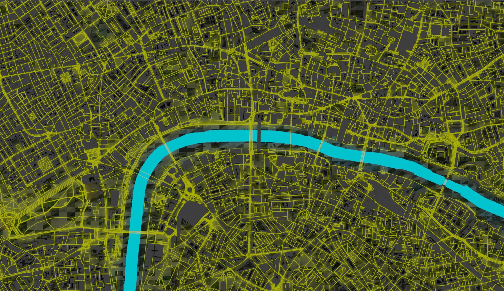
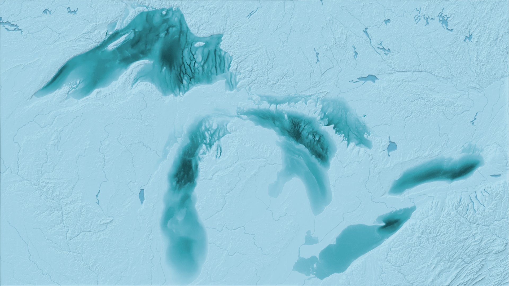
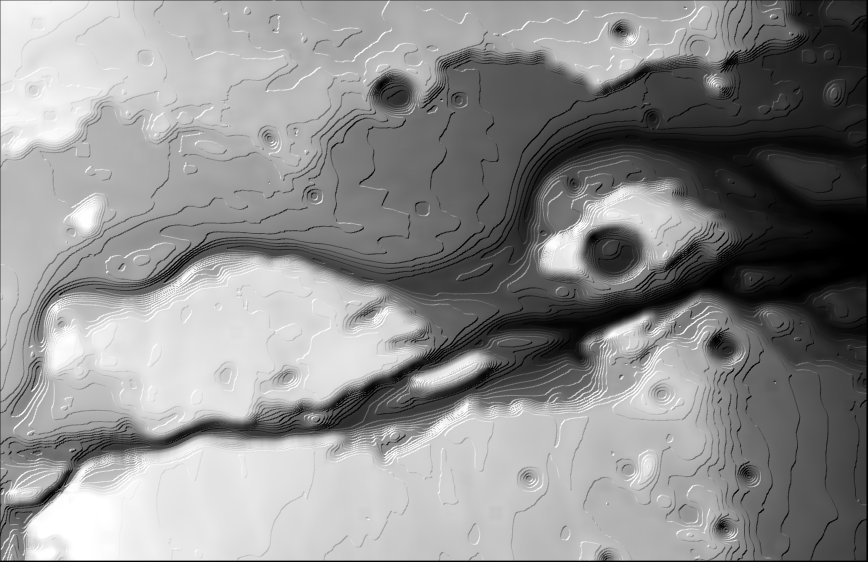
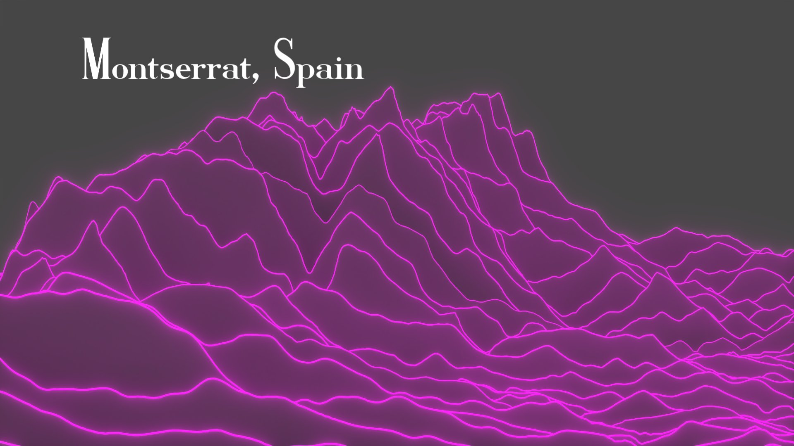
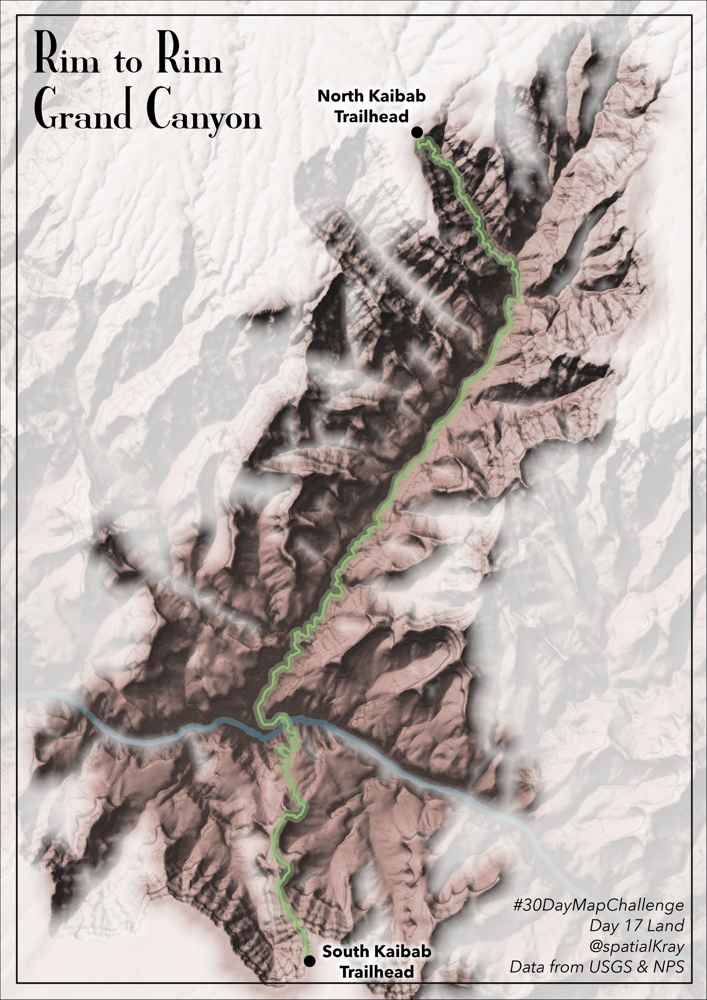
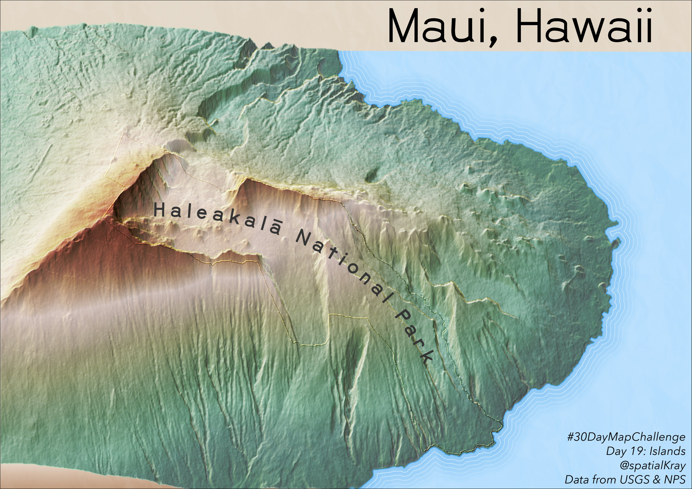
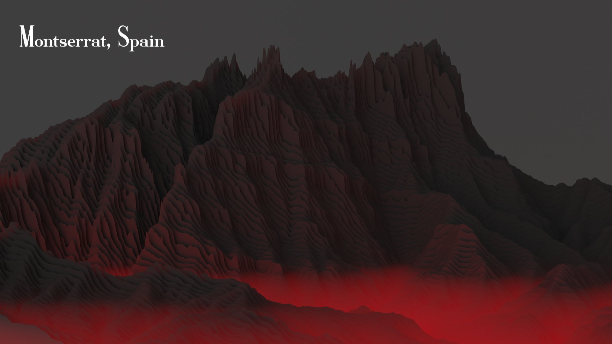
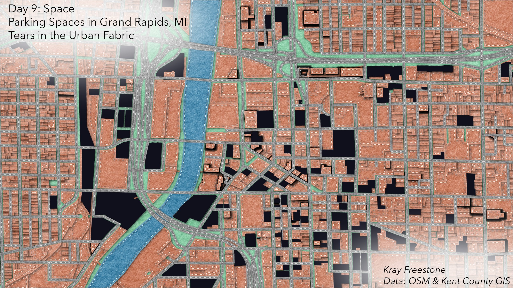
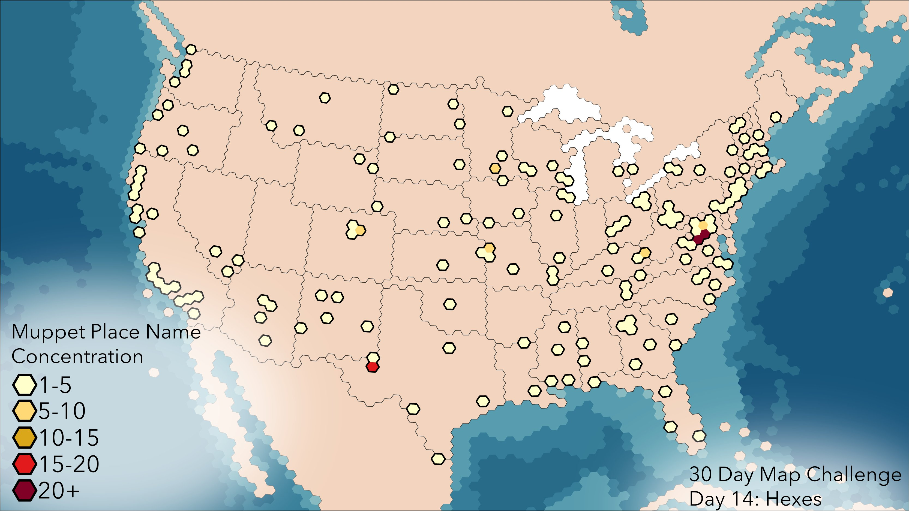

I have been meaning to compile these maps for a while, so here is a compilation of my maps for the #30DayMapChallenge (years 2021 and 2022).
2021
Day 5 - OpenStreetMap

Day 8 - Blue

Day 9 - Monochrome

Day 11 - 3D

Made in Blender. It’s 3D, I promise.
Day 17 - Land

Day 19 - Island(s)

Thanks to John Nelson for his tutorial.
Day 21 - Elevation

Played around with a more densified joy plot and controlling the emission by z-value.
2022
Day 9 - Space

My urban planning professor in college called them tears in the urban fabric, so I’m showing them as voids in the felt style made by John Nelson.
Day 14 - Hexagons
 All “Muppet” place names in the continental US (e.g. Kermit, Gonzo, Animal, Janice, Pepe, Ms. Piggy, Rizzo, Scooter, Statler & Waldorf)
Data source: Geographic Names from USGS